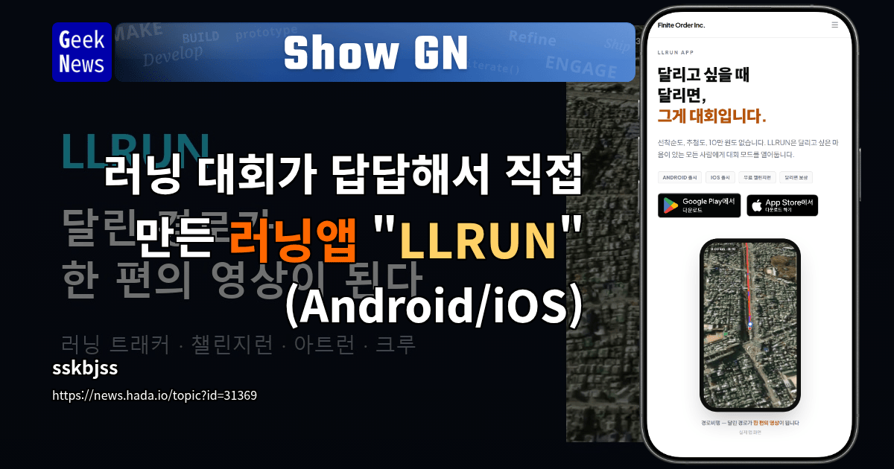

러닝 대회는 한 번 참가하려면 일정과 장소를 맞춰야 하고 비용도 적지 않습니다. 한 1인 개발자는 이 불편을 그냥 넘기지 않고, 등록된 코스를 원하는 시간에 달리며 기록을 겨룰 수 있는 무료 러닝앱 LLRUN을 만들었습니다. 기능 목록보다 더 흥미로운 건 “대회가 꼭 같은 날 열려야 할까?”라는 질문에서 제품이 시작됐다는 점입니다.

먼저 핵심만 보면
- 문제: 오프라인 러닝 대회는 신청 경쟁, 정해진 일정, 참가비라는 장벽이 있습니다.
- 해결: 등록된 코스를 각자 원하는 시간에 달리고 개인 기록과 코스 순위를 비교합니다.
- 차별점: 기록만 쌓는 대신 3D 경로 영상, 지도에 그림을 그리는 아트런, 크루 대항전으로 다시 달릴 이유를 만듭니다.
- 기술: React 18·Capacitor, MapLibre GL, Spring Boot를 사용했고 Android 걸음 수는 TYPE_STEP_COUNTER와 포그라운드 서비스로 처리했다고 개발자가 밝혔습니다.
왜 또 하나의 러닝앱을 만들었을까
이미 러닝 기록 앱은 많습니다. 그래서 “GPS를 기록한다”만으로는 새 앱을 설치할 이유가 약합니다. LLRUN이 잡은 문제는 기록 자체가 아니라 대회 경험의 접근성입니다. 원문에서 개발자는 선착순 마감과 10만~15만원 수준의 참가비가 답답해 직접 만들었다고 설명합니다.
이 출발점은 1인 개발에서 특히 중요합니다. 거대한 시장 전체를 상대하기보다, 사용자가 반복해서 겪는 한 장면을 정확히 고르면 작은 제품도 설명이 쉬워집니다. “모든 운동을 관리하는 앱”보다 “오늘 혼자 달려도 대회처럼 기록을 겨루는 앱”이 훨씬 선명합니다.
제가 보는 핵심: LLRUN의 경쟁력은 기능 수보다 시간과 장소를 분리해 대회 경험을 다시 설계한 데 있습니다.
사람을 다시 뛰게 만드는 세 가지 장치
1. 기록 경쟁: 목표가 눈에 보인다
챌린지런은 같은 코스를 달린 기록을 비교합니다. 개인 최고 기록을 갱신하는 동기와 다른 러너의 순위를 따라가는 동기를 함께 만듭니다. 단순 누적 거리보다 “다음에는 이 기록을 넘는다”는 목표가 구체적입니다.
2. 경로비행과 아트런: 결과를 공유하고 싶어진다
달린 GPS 경로를 위성지도 위 3D 영상으로 재생하거나, 지도 위에 그림을 그리는 아트런은 기록을 콘텐츠로 바꿉니다. 숫자 한 줄보다 결과물이 눈에 보이면 완주 뒤 공유할 이유가 생깁니다. 자연스러운 공유는 광고보다 강한 유입 경로가 될 수 있습니다.
3. 크루: 혼자 쓰는 도구에서 관계가 있는 서비스로
크루 누적 거리와 크루 대항전은 개인 기록 앱에 팀 목표를 더합니다. 다만 커뮤니티 기능은 초기 사용자가 적으면 비어 보이기 쉽습니다. 지역 코스, 학교·회사 러닝 모임처럼 밀도가 높은 작은 집단부터 채우는 전략이 중요해 보입니다.
겉보다 어려운 기술 문제
러닝앱은 화면을 만드는 것으로 끝나지 않습니다. 앱이 백그라운드로 내려가도 센서와 GPS 기록이 이어져야 하고, 배터리 사용량과 정확도 사이에서 균형을 잡아야 합니다. 개발자는 Android에서 포그라운드 서비스가 걸음 센서를 유지하도록 구현했고, 자정을 넘길 때 걸음 수가 꼬이는 문제와 GPS 부정 기록 검증도 겪었다고 설명합니다.
- 백그라운드 기록: OS 절전 정책 때문에 데이터가 끊기지 않는지 확인해야 합니다.
- 날짜 경계: 누적 센서 값을 하루 단위 기록으로 바꿀 때 자정 롤오버 처리가 필요합니다.
- 기록 신뢰도: 비정상 속도, 순간 이동, GPS 오차를 실제 달리기와 구분해야 합니다.
- 개인정보: 위치 데이터는 생활 반경을 드러낼 수 있어 저장 범위와 공개 설정이 중요합니다.
React와 Capacitor로 두 플랫폼을 함께 가져가더라도 센서, 백그라운드 실행, 웨어러블 연동은 결국 운영체제별 예외를 만납니다. 크로스플랫폼의 장점은 코드 공유지만, 제품 품질은 네이티브 경계에서 결정되는 경우가 많습니다.
설치 전에 제가 확인할 항목
아직 직접 장거리 테스트를 한 사용 후기는 아닙니다. 실제로 써본다면 아래 순서로 확인하겠습니다.
- 화면을 끄고 30분 이상 달렸을 때 경로와 걸음 수가 빠지지 않는가
- GPS 오차가 큰 도심에서 기록이 튀었을 때 자동 보정되는가
- 위치 기록의 공개 범위와 삭제 방법이 명확한가
- 3D 경로 영상 생성 시간이 길지 않고 공유 결과가 보기 좋은가
- Android와 iOS에서 핵심 기능 차이가 어느 정도인가
1인 개발자가 배울 점
LLRUN 사례에서 가져갈 수 있는 건 특정 기술 스택보다 문제를 고르는 방식입니다. 불편을 넓게 정의하지 않고, “비싼 대회와 맞지 않는 일정”이라는 장면으로 좁혔습니다. 그다음 기록 경쟁으로 재방문 이유를, 경로 영상으로 공유 이유를, 크루로 관계의 이유를 붙였습니다.
반대로 무료 서비스가 오래 운영되려면 서버·지도·영상 처리 비용을 감당할 구조가 필요합니다. 유료 기능을 무리하게 앞세우기보다 대회 주최사 코스 등록, 브랜드 챌린지, 크루용 운영 기능처럼 핵심 경험을 해치지 않는 수익 모델이 잘 맞아 보입니다. 이 부분은 개발자가 공개한 계획이 아니라 제품 구조를 보고 한 제 판단입니다.
직접 확인하기
이 글은 공개된 개발자 소개와 제품 페이지를 바탕으로 기능을 정리하고, 제품·기술 관점의 분석을 덧붙였습니다. 직접 사용한 것처럼 표현하지 않았으며 세부 기능과 정책은 원문에서 다시 확인했습니다.